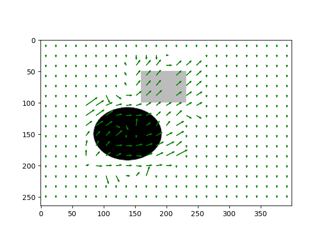

Hareket halindeki bir kameranın aldığı görüntülerdeki herhangi bir pikseli nasıl takip ederiz?
Matematiksel olarak temsil etmek gerekirse, zamana göre değişen 2 boyutlu görüntüyü bir fonksiyon olarak düşünelim, ki bu fonksiyonun değerleri ayrıksal olarak, imajın ta kendisi. Bir \(I(x(t),y(t),t)\) fonksiyonu piksel değerlerini veriyor. Bu fonksiyonda \(x,y\) ekran kordinatlarına tekabül ediyor, \(t\) ise zaman, \(1,2,..\) gibi değerleri indeks değerleri var, mesela \(I(100,200,1)\), bize 1. video karesindeki \(x=100,y=200\) kordinatlarındaki piksel değerini verecek.
\(x,y\) değişkenleri parametrize edildi, bir noktayı takip etmek istiyoruz çünkü, ve \(t\)’ye göre bu takip edilen noktanın \(x,y\) kordinatları belli bir gidişat yönünde değişiyor.
Şu faraziyeyi yaparak takip problemimizi kolaylaştırabiliriz. Diyelim ki takip edilen bir nokta, görüldüğü her karede aynı piksel rengindedir. Bu çok sıradışı bir faraziye değil, resim karelerinden bir araba geçiyor mesela, ve bu arabanın üzerindeki piksellerin renkleri, en azından iki kare arasında değişmiyor. Işık seviyesi, gölgede olma, vs. gibi durumlarda biraz değişebilir, fakat basitleştirme amacıyla bu faraziye geçerlidir.
Bir diğer faraziye, kameralar hareket ettiklerinde alınan iki görüntü arasındaki tüm piksellerin yer değişimi genellikle aynı yönde olmasıdır. Bu değişim yönünü \(<u,v>\) vektörü olarak görebiliriz, ve bu değişkenler iki görüntü arasındaki değişimde tüm pikseller için aynı olacaktır. Bu da normal, kamerayı alıp mesela sağa doğru hareket ettiriyoruz, ve görüntüdeki tüm pikseller sola doğru gidiyorlar.
Tüm bunları modelimizde nasıl kullanırız?
Takip edilen nokta her karede aynı renkte ise, şu ifade doğru demektir
\[ I(x(t),y(t),t) = \textrm{ sabit } \]
Eğer bu fonksiyonun zamana göre türevini alırsak
\[ \frac{d \ I(x(t),y(t),t)}{dt} = 0\]
sonucu gelir. Eşitliğin sağı sıfır, çünkü bir sabitin türevini aldık. Sol tarafa Zincirleme Kanununu uygularsak,
\[ \frac{\partial I}{\partial x}\frac{dx}{dt} + \frac{\partial I}{\partial y}\frac{dy}{dt} + \frac{\partial I}{\partial t} = 0 \]
Bu formülde \(dx/dt\) ve \(dy/dt\), hareket halindeki (zaman geçerken) noktanın sonsuz küçüklükteki yer değişimi. Ayrıksal bağlamda arka arkaya iki kare içindeki yer değişimi. O zaman,
\[ \frac{dx}{dt}, \frac{dy}{dt} = u, v \]
Alttakiler ise mesafesel (spatial) gradyanlardır, bunların nasıl hesaplanacağını çok iyi biliyoruz!
\[ \frac{\partial I}{\partial x}, \frac{\partial I}{\partial y} \]
Alttaki ise resim karelerinin zamana göre türevidir.
\[ \frac{\partial I}{\partial t} \]
Daha derli toplu olarak göstermek gerekirse ana formül nihai olarak şöyle
\[ I_x u + I_y v + I_t = 0 \]
ya da
\[ \nabla I \cdot <u, v> = -I_t \]
Şimdi \(u,v\)’nin hesaplanmasına gelelim. Üstteki formülü bir veri noktası için yazmak yeterli değil. Ama bu formülü hem takip ettiğimiz, hem de onun etrafındaki pikseller için yazarsak (onların yer değişimi de aynı değil mi?), ve bu sistemi çözersek, sonuca varabiliriz.
İki tane bilinmeyenimiz var, ama böylece pek çok formül elde ediyoruz. Veriler gürültülü olduğu için, aslında bilinmeyenden “daha fazla” formül elde etmek iyi, bu tür denklem sistemlerine “çok eşitliğe sahip (overdetermined)” denir, ve böyle tür sistemler En Az Kareler (Least Squares) ile çözülür. Tüm bunları biraraya koyunca şu ortaya çıkar.
\[ \left[\begin{array}{cc} I_x(p_1) & I_y(p_1) \\ I_x(p_2) & I_y(p_1) \\ \vdots & \vdots \\ I_x(p_k) & I_y(p_k) \end{array}\right] \left[\begin{array}{r} u \\ v \end{array}\right] = - \left[\begin{array}{c} I_t(p_1) \\ I_t(p_2) \\ \vdots \\ I_t(p_k) \end{array}\right] \]
Gradyanların belli noktalarda hesaplandığını unutmayalım, o sebeple \(p_1, p_2\) gibi piksel noktalarını bu fonksiyonlara geçiyoruz.
Bu sistemi
\[ A \ d = b \]
olarak gösterebiliriz, ki \(d = <u,v>\). Sol tarafı \(A^T\) ile çarpalım
\[ A^TA \ d = A^Tb \]
Eğer \(A^TA\)’nin matris tersini iki tarafla çarparsak, \(d\) yanlız kalır, ve sonuç elde edilir.
Bu denklemi Python Numpy’da pinv kullanarak çözeriz.
Test için üç tane resim kullandık, bu resimlerden
flow1-bw-0.png başlangıç resmi, bu resmin ortasındaki
objeleri GIMP kullanarak elle kopyaladık, bir üst sağ çapraza doğru, bir
alt sol çapraza doğru, ve iki yeni resim elde ettik
(upright.png, dleft.png). Takip edilen nokta
gri dörtgenin alt sol köşesinde. Lucas Kanade algoritması bu noktayı
takip ederek, yeşil ile işaretledi.
import scipy.signal as si
from PIL import Image
def gauss_kern():
h1 = 15
h2 = 15
x, y = np.mgrid[0:h2, 0:h1]
x = x-h2/2
y = y-h1/2
sigma = 1.5
g = np.exp( -( x**2 + y**2 ) / (2*sigma**2) );
return g / g.sum()
def deriv(im1, im2):
g = gauss_kern()
Img_smooth = si.convolve(im1,g,mode='same')
fx,fy=np.gradient(Img_smooth)
ft = si.convolve2d(im1, 0.25 * np.ones((2,2))) + \
si.convolve2d(im2, -0.25 * np.ones((2,2)))
fx = fx[0:fx.shape[0]-1, 0:fx.shape[1]-1]
fy = fy[0:fy.shape[0]-1, 0:fy.shape[1]-1];
ft = ft[0:ft.shape[0]-1, 0:ft.shape[1]-1];
return fx, fy, ft
im1 = np.asarray(Image.open('flow1-bw-0.png'))
im2 = np.asarray(Image.open("upright.png"))
fx, fy, ft = deriv(im1, im2)
print (fx[:5])[[32.07763979 48.21839171 58.5675253 ... 63.94363287 62.82211772
58.56746171]
[26.32259667 39.56753942 48.05993696 ... 52.47151812 51.55121378
48.05988478]
[14.51156379 21.81345859 26.49529034 ... 28.92738099 28.42002014
26.49526157]
[ 5.34221958 8.03030516 9.75385292 ... 10.64919146 10.462414
9.75384233]
[ 1.3027865 1.95831957 2.37863452 ... 2.59697728 2.55142858
2.37863194]]import scipy.signal as si
from PIL import Image
import numpy.linalg as lin
def lk(im1, im2, i, j, window_size) :
fx, fy, ft = deriv(im1, im2)
halfWindow = np.floor(window_size/2)
curFx = fx[int(i-halfWindow-1):int(i+halfWindow),
int(j-halfWindow-1):int(j+halfWindow)]
curFy = fy[int(i-halfWindow-1):int(i+halfWindow),
int(j-halfWindow-1):int(j+halfWindow)]
curFt = ft[int(i-halfWindow-1):int(i+halfWindow),
int(j-halfWindow-1):int(j+halfWindow)]
curFx = curFx.T
curFy = curFy.T
curFt = curFt.T
curFx = curFx.flatten(order='F')
curFy = curFy.flatten(order='F')
curFt = -curFt.flatten(order='F')
A = np.vstack((curFx, curFy)).T
U = np.dot(np.dot(lin.pinv(np.dot(A.T,A)),A.T),curFt)
return U[0], U[1]
def test(image1,image2,output):
x=165
y=95
win=50
im1 = np.asarray(Image.open(image1))
im2 = np.asarray(Image.open(image2))
u, v = lk(im1, im2, x, y, win)
plt.imshow(im1, cmap='gray')
plt.plot(x,y,'+r');
# 3 ile carptik cunku vektor degisimi iyi hesaplandi ama
# grafikleme icin cok ufakti, ikinci yesil nokta iyi gozuksun
# diye onu biraz buyuttuk
plt.plot(x+u*3,y+v*3,'og')
plt.savefig(output)
test('flow1.png','flow2.png','vision_85lk_03.png')test('flow1.png','flow3.png', 'vision_85lk_04.png')
Bu matematiksel modele alternatif bir bakış şöyle olabilir. İki imaj karesi içinde birincisine \(I(x,y)\) ikincisine \(H(x,y)\) diyelim, burada \(t\) üzerinden parametrizasyon olmasın; \(x,y\) pikselinin \(H\) içinde \(u,v\) kadar yer değişiminden sonra, bu noktaların \(I\)’de geldiği yerdeki grilik değerinin aynı olduğunu (yine) farzediyoruz. Sonra \(I(x+u,y+v)\)’nin birinci dereceden Taylor Açılımını yapıyoruz,
\[ I(x+u,y+v) = I(x,y) + \frac{\partial I}{\partial x}u + \frac{\partial I}{\partial y}v + ... \]
ya da
\[ I(x+u,y+v) \approx I(x,y) + \frac{\partial I}{\partial x}u + \frac{\partial I}{\partial y}v \]
Grilik aynılığını ise şöyle belirtebiliriz
\[ I(x+u,y+v) - H(x,y) = 0\]
Taylor açılımını üstteki formülde \(I\) yerine geçirelim
\[ I(x,y) + \frac{\partial I}{\partial x}u + \frac{\partial I}{\partial y}v - H(x,y) = 0 \]
\(H\)’in yerini değiştirelim
\[ I(x,y) - H(x,y) + I_xu + I_yv = 0\]
Şu ifade \(I(x,y) - H(x,y)\) nedir? Bunlar iki imajın, sonrası ve öncesi arasındaki fark değil midir? O zaman bu hesabı imajın zamana göre alınmış türevi olarak görebiliriz, yani \(I_t = I(x,y) - H(x,y)\). Yerine koyalım
\[ I_t + I_xu + I_yv = 0\]
\[ I_xu + I_yv = -I_t \]
Böylece aynı denkleme erişmiş olduk. Bu aslında normal, birinci dereceden Taylor açılımı ile tam diferansiyel denklemi (ve Zincirleme Kanununu) birbiriyle çok yakından alakalı.
Ufak Piksel Değişimleri
Konu hakkında bir nokta daha şu; Lucas-Kanade yöntemi 1. derece Taylor açılımı kulladığı için ufak piksel değişimleri için geçerlidir, çünkü Taylor açılımı yerel bir noktaya çok yakın bölgelerde bir fonksiyona yakın sonuçlar verir. Bu da aklımızda bulunsun.
OpenCV
OpenCV ile optik akış kullanımı altta görülüyor.
import pandas as pd, zipfile
import numpy as np
import cv2
def draw_flow(img, flow, step=16):
h, w = img.shape[:2]
y, x = np.mgrid[step/2:h:step, step/2:w:step].reshape(2,-1).astype(int)
fx, fy = flow[y,x].T
lines = np.vstack([x, y, x+fx, y+fy]).T.reshape(-1, 2, 2)
lines = np.int32(lines + 0.5)
vis = cv2.cvtColor(img, cv2.COLOR_GRAY2BGR)
cv2.polylines(vis, lines, 0, (0, 255, 0))
for (x1, y1), (x2, y2) in lines:
cv2.circle(vis, (x1, y1), 1, (0, 255, 0), -1)
return vis
prevgray = cv2.imread('106.jpg', cv2.IMREAD_GRAYSCALE)
gray = cv2.imread('107.jpg', cv2.IMREAD_GRAYSCALE)
flow = cv2.calcOpticalFlowFarneback(prevgray, gray, None, 0.5, 3, 15, 3, 5, 1.2, 0)
cv2.imwrite('pde_lk_01.png', draw_flow(gray, flow))Out[1]: True
Kaynaklar
[1] Collins, Introduction to Computer Vision, http://www.cse.psu.edu/~rtc12/CSE486/
[2] Khurram Hassan-Shafique, CAP 5415 Lecture Notes, Spring 2003
[3] Suhr, Kanade-Lucas-Tomasi (KLT) Feature Tracker Feature Tracker, http://web.yonsei.ac.kr/jksuhr/articles/Kanade-Lucas-Tomasi%20Tracker.pdf